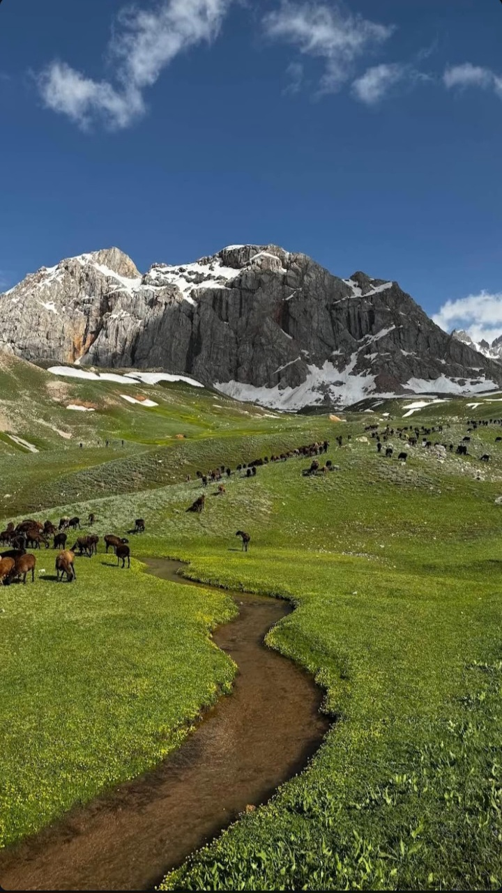
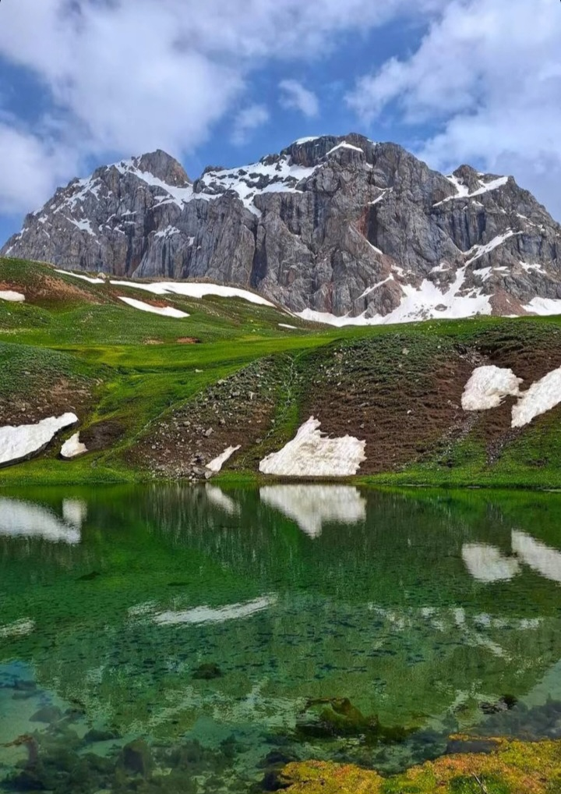
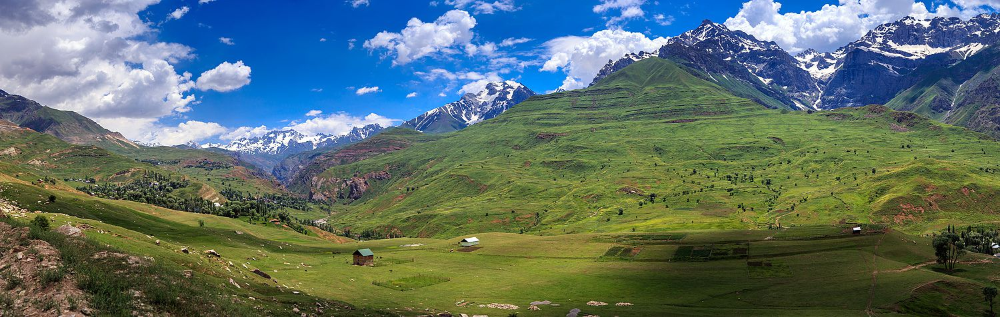
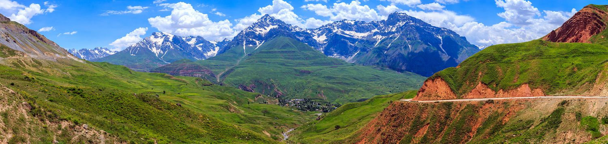

Ходжа Сангхок — это уникальная высокогорная локация в Варзобском районе (джамоат Зидди), расположенная на высоте более 3 000 метров. Место знаменито не только своими суровыми и масштабными пейзажами, но и природными богатствами.
Особенности: Главная ценность локации — мощные целебные минеральные источники. Вода, бьющая прямо из-под земли, богата железом, магнием, кальцием и натрием. Она природно газированная и издавна используется местными жителями для оздоровления организма.



